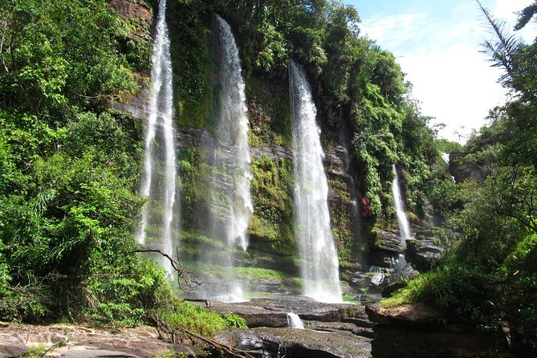
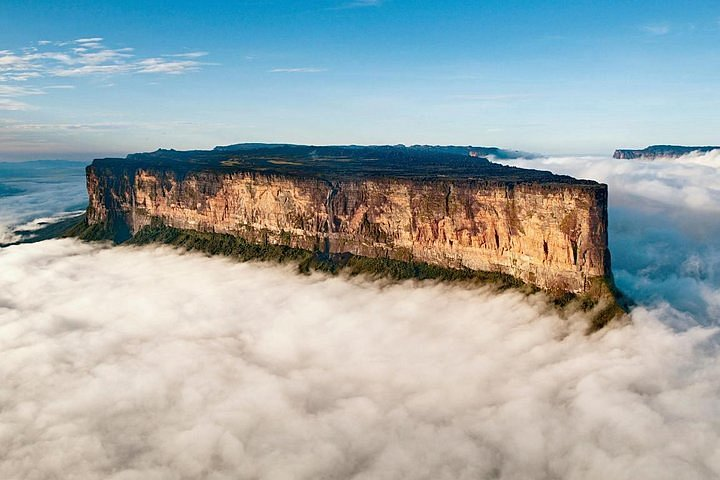
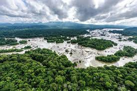

-
Bogotá
Algumas pessoas acreditam que até hoje que a cidade perdida de el dorado se encontra na floresta Amazônia em na divisão de territorios do Brasil com a Colômbia.
-
Roraima
Já por outro lado algumas pessoas acreditam que se encontra na cidade de Roraima, também na Amazônia
-
Guiana
Por último e não menos importante, temos a crença de que se encontra no País da Guiana por sua vez também na Amazônia, já que trata-se de uma lenda do povo local
Lembrando brevemente que ao certo não se sabe a localização correta até hoje de el dorado